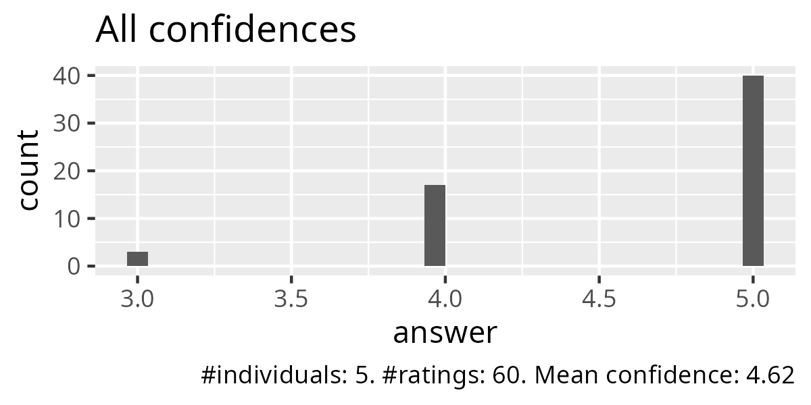
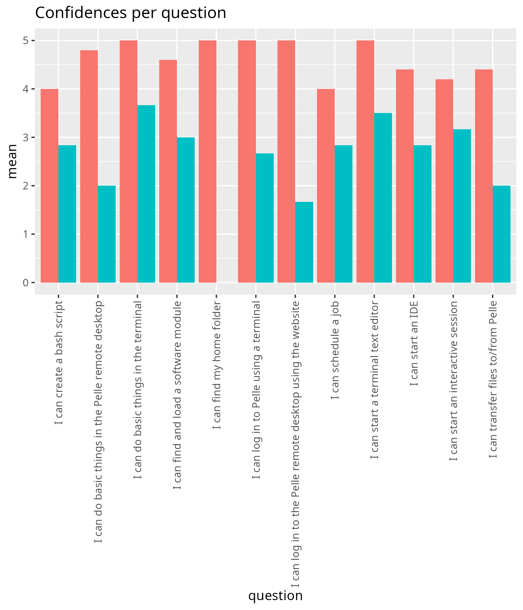

Reflection¶
- Date: 2026-01-19
- Lesson plan
- Evaluation
- Reflection
- Observation notes
Group diversity¶
Group diversity was high:
- The earliest learner arrived at 8:45, the latest at 11:30
- Some learners had another meeting from 11:00-12:00
- 6 out of 10 learners did not do the preparations to the course
- 4 out of 10 learners, thanks to my UPPMAX colleague, could get their account working, after which they joined the course at around 11:15
- 2 out of 10 learners could not access UPPMAX and tagged along with someone else
- Times to finish:
- 60 + 45 + 0 + 60 + 45 + 43 - 15 = 238 minutes
- 60 + 45 + 45 + 60 + 45 + 54 - 15 = 294 minutes
- 60 + 45 + 45 + 60 + 45 + 34 - 15 = 274 minutes
- 60 + 45 + 45 + 60 + 45 + 39 - 15 = 279 minutes
- The slowest (294 minutes) were (294-238)/238=((N-O)/O)= 24% slower than the fastest (238)
Time until exercises¶
I kept track of how long I talked (including dialogues with the learners) until I put them in breakout room:
- 9:00: 30 minutes
- 10:00: no monologue, kept learners in breakout rooms
- 11:00: 17 minutes
- 13:00 12 minutes
- 14:00: no monologue, kept learners in breakout rooms
- 15:00 12 minutes
I always want this shorter.
13:00 observer¶
At 13:00 I introduced the observer. I had a meeting with him before at 12:30, where we agreed to follow the ideas I had in the lesson plan. It felt nice to welcome a colleague to show my work to!
13:55 discussion with observer¶
The observer noted that learners change in behavior the moment I come in: the dare to try out things more.
In the course material, there is a part about the Pluma file manager. However, the image at the answer still shows Thunar. It threw off learners more than expected. Fix that image!
- [ ] Replace image of Thunar by image of Pluma
16:09¶
I had a great day with my learners, an observer and a colleague.
I prepared a Menti, but decided against this, as learners arrived/left/had_a_meeting at very different times. Also they worked at different speeds. I felt the Menti was made for the wrong moment. At the end, however, all learners were at the same subject (i.e. at 14:15, 'Doing real work'). That could be a useful moment to try a Menti. Or maybe at the end? I am still quite ambivalent in doing quizzes: I do prefer just asking in person ...
I have had the insight to ask to consider to turn on camera in general room, i.e. not in the breakout room, as then the discussion on this is not public: it is just between me and the learner. I first did this the wrong way around with one learner at around 10:35. At 11:30 I did it the right way around. It's a nice little insight!
16:15 discussion with observer¶
One of the things I wanted to work on today, is to remain calm. This worked: the observer noted how calm I was, took the time to talk and space my words with silence. Great!
The observer enjoyed the soft values I brought to the attention: you do not want to disturb others on the login node, hence you behave a certain way. With the observer being in data management, he thinks it would be helpful to encourage some good behavior in data management (e.g. do not leave temporary files laying around). I am willing to do so. We discussed if a beginner course like this should teach best practives. According to the observer, it would be good to plant the seeds. I am up to try this. As I will follow the NBIS data management course, I assume I will get some ideas there :-)
- [ ] Consider adding best/better data management practices
A point of improvement could be the page navigation: the observer saw learners struggle going back multiple pages. I can imagine. I should have made more clear what the page overview is. I think an overview of pages could be helpful. Maybe the 'Schedule' page could link to all sessions ...
- [ ] Try to improve navigation
The observer noted I used a private email in the Google Forms. It would look more professional to use a work email. NBIS has this, I am unsure about UPPMAX ...
- [ ] Try to use a work email in an UPPMAX evaluation form
The Bash/Linux pages were to inviting to google things. Due to this, learners got lost into details, from the information they found. Try to keep them at this page more, e.g. consider a cheat sheet.
- [ ] Try to keep learners on Linux page
The observer noted the interaction I have with the camera: my body movements were not just static and were dynamic instead, including moving forward or away from the camera. It help him keep attention.
Other things to do¶
- [ ] Check:
0 - I don't even know what this is aboutis missing in the Google Forms - [ ]
module load pythondid not work. Is this a temporary thing? Or has this been changed to bemodule load Python? - [ ] The file manager picture (in the answer) is of Thunar (which was the file manager on a previous system). This threw the learners off longer than expected. Update that image.
Evaluation results¶
- Excellent day!
Yay!
- Very good support, good balance of giving us room to for trial and error but then also support if were stuck.
Great to hear. I know the observer had a harder time to let learners try to learn from trial and error :-)
- Excellent course. Well paced, clear structure, and very constructive engagement and feedback from the course leader and the course team.
I am happy to read that learner-centered is well paced: it is the goal of being learner-centered.

This is quite high!

Linux and bash script are weakest, with 4 out of 5! I think that is good enough, even would I do nothing.

Same here.
Analysis, pre and post¶




| question | mean_pre | mean_post | p_value | different |
|---|---|---|---|---|
| I can log in to the Pelle remote desktop using the website | 1.666667 | 5.0 | 0.0042875 | TRUE |
| I can do basic things in the Pelle remote desktop | 2.000000 | 4.8 | 0.0238654 | TRUE |
| I can find my home folder | 4.200000 | 5.0 | 0.1770160 | FALSE |
| I can transfer files to/from Pelle | 2.000000 | 4.4 | 0.0454335 | TRUE |
| I can log in to Pelle using a terminal | 2.666667 | 5.0 | 0.0419689 | TRUE |
| I can do basic things in the terminal | 3.666667 | 5.0 | 0.0432554 | TRUE |
| I can find and load a software module | 3.000000 | 4.6 | 0.0840432 | FALSE |
| I can start a terminal text editor | 3.500000 | 5.0 | 0.1040622 | FALSE |
| I can create a bash script | 2.833333 | 4.0 | 0.2552905 | FALSE |
| I can schedule a job | 2.833333 | 4.0 | 0.5675894 | FALSE |
| I can start an interactive session | 3.166667 | 4.2 | 0.8477689 | FALSE |
| I can start an IDE | 2.833333 | 4.4 | 0.2189283 | FALSE |
I did not see that the learners had such a low confidence at the start! Five learning outcomes increased significantly. I feel that is record high.
Conclusion¶
I failed using a Menti and I think that was the right decision: I like talking via the air more. I should keep considering Menti.
As far as I can see, this day of teaching goes well: even without any changes, it will be fine.
There are some changes that would make it a bit better: let's see what happens.